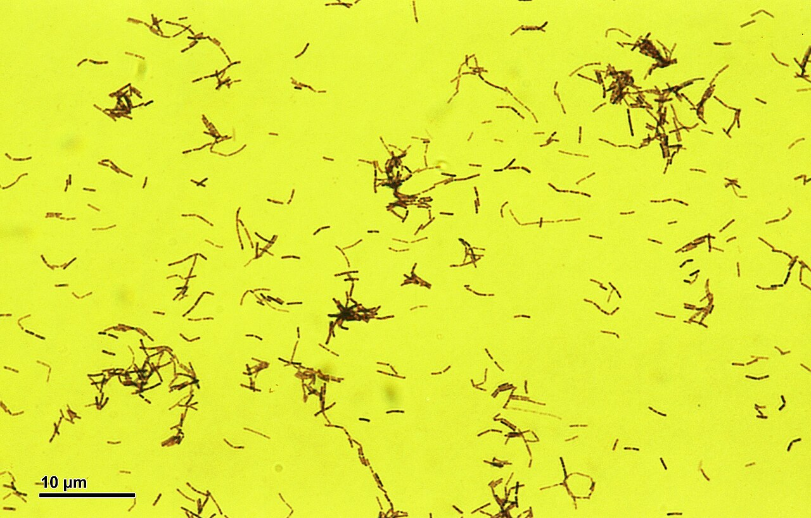

diario de la mañana — el mundo, tu ciudad y lo que te asombra
Nº 13Martes 13 de octubre de 2026Buenos Aires≈ 35 min de lectura
Tapa: la Avenida de Mayo en la época del Centenario. Hoy es martes de moda, y la moda sale a la calle. Foto: Beatrice Murch from Buenos Aires, Argentina · CC BY 2.0 · Wikimedia CommonsModa porteña
Buen día. Martes 13, y encima con los Templarios en la historia: si sos supersticiosa, hoy tenés material. Esta semana la moda sale de las grandes casas y baja a la vereda: cómo se vestía Buenos Aires en 1910, el año del Centenario, con fotos de archivo. En ciencia, unos microbios intestinales que viajaron con nuestros ancestros desde África hasta Bolivia y que estamos perdiendo. Y ayer se conocieron los Nobel de Economía.
11° / 18°Fresco y nublado, con ráfagas del este y alguna lluvia débil posible cerca del mediodía. Paraguas chico.
Arabia Saudita · YemenDos ataques en dos días contra el aeropuerto de Riad
Los rebeldes hutíes de Yemen atacaron dos veces el aeropuerto internacional de Riad: el domingo murieron al menos 12 personas y el lunes, una más, con 11 heridos. Es la respuesta a la ofensiva que la coalición saudí lanzó el fin de semana sobre Saná. La guerra de Yemen, congelada desde la tregua de 2022, vuelve a escalar.
VaticanoOperan al Papa de un nódulo pulmonar
León XIV será operado esta semana para extirpar un nódulo pulmonar. El Vaticano estima una recuperación de alrededor de una semana. Su viaje a la Argentina, Uruguay y Perú está previsto para principios de noviembre.
AsiaMisiles norcoreanos y la economía mundial en Bangkok
Corea del Norte lanzó varios misiles balísticos hacia el mar de Japón. Y en Bangkok empezaron las reuniones anuales del FMI y el Banco Mundial, con delegados de 191 países. La Argentina, el mayor deudor del Fondo, sigue esas conversaciones con atención.
SueciaEl Nobel de Economía, para Hall y Woodford
Michael Woodford.
Los estadounidenses Robert E. Hall (Stanford) y Michael Woodford (Columbia) ganaron el último Nobel de la temporada por sus aportes a los «fundamentos microeconómicos de la estabilización macroeconómica»: modelos que explican cómo deciden los hogares y las empresas y que usan los bancos centrales para fijar las tasas de interés. Más en el English corner.
Argentina y Buenos Aires no vivir adentro de un táper
Venció el plazo: la Argentina va al Tribunal del Mar
Malvinas: el pedido a Hamburgo, esta semana
El ultimátum por Sea Lion venció ayer y Londres no cambió de postura. La Cancillería, a cargo de Pablo Quirno, ultima la presentación de una solicitud de medidas provisionales ante el Tribunal Internacional del Derecho del Mar. El tribunal no puede decidir sobre la soberanía, y presentar el pedido no frena el proyecto: si se formaliza en octubre, una primera decisión podría llegar en noviembre. Mientras tanto, Rockhopper cerró la compra de un segundo buque de producción.
Vuelta a clases y a la oficina
Después del fin de semana largo, hoy vuelve la actividad normal. Si viajás en tren, confirmá el estado de las líneas antes de salir: la semana pasada hubo ramales del Mitre interrumpidos por obras.
Ciencia nivel colega
Los microbios intestinales que migraron con los humanos desde África hasta Bolivia
Los Tsimane son horticultores y cazadores de las tierras bajas del Beni, en Bolivia. Los Hadza, cazadores-recolectores de Tanzania. Sus ancestros se separaron hace decenas de miles de años, cuando un grupo de humanos salió de África y, mucho después, cruzó a América. El grupo de Justin Sonnenburg (Stanford), con Michael Gurven y Benjamin Good, se preguntó si los microbios intestinales hicieron ese viaje con ellos. Publicaron la respuesta en Nature: sí, y muchos de esos microbios están desapareciendo de las poblaciones industrializadas.
Las tierras bajas del Beni, en Bolivia, donde viven los Tsimane. Foto: Sam Beebe · CC BY-SA 2.0 · Wikimedia Commons
Métodos y resultados
Metagenómica ultraprofunda de heces de Tsimane y comparación con datos equivalentes de Hadza. Con la profundidad de secuenciación suficiente se pueden reconstruir genomas de especies raras (MAGs) y ver variación a nivel de cepa.
1.231 especies microbianas compartidas entre los dos pueblos. La mayoría son raras o directamente ausentes en las poblaciones industrializadas.
Genética de poblaciones bacteriana: en 636 de esas especies analizaron la divergencia entre las cepas de Bolivia y de Tanzania y los patrones de flujo génico (la recombinación homóloga entre cepas).
El resultado clave: los tiempos de separación estimados para las cepas coinciden, de forma aproximada, con la salida de los humanos de África y con el poblamiento de América. Es la firma de una co-migración: los microbios se transmitieron de generación en generación dentro de las poblaciones humanas que se iban moviendo.
Lectura crítica
Fechar la divergencia bacteriana necesita un reloj molecular, es decir, una tasa de mutación por año. En bacterias esa tasa es incierta y varía entre especies, y la recombinación borra parte de la señal. Los autores hablan de un acuerdo «aproximado», y así hay que leerlo.
Son dos poblaciones. Para hablar de una migración global harían falta más puntos intermedios (Asia, Oceanía, otras poblaciones americanas).
Que estos microbios se estén perdiendo es un dato; que eso cause enfermedad es otra cosa. Los propios autores dicen que las consecuencias para la salud son inciertas. Es una hipótesis (la de los «microbios en extinción» o missing microbes), no una conclusión.
Ética: la investigación con pueblos indígenas requiere consentimiento comunitario y acuerdos sobre los datos y los beneficios. Gurven trabaja desde hace más de 20 años con los Tsimane en un proyecto de salud.
La conexión con lo que estudiás
Es metagenómica aplicada a una pregunta de evolución. Si las cepas «ancestrales» son funcionalmente distintas (por ejemplo, en la degradación de fibras vegetales complejas, como las especies de Prevotella y Treponema abundantes en los Hadza), conservarlas tiene valor. Por eso existen iniciativas como la Microbiota Vault, un banco de muestras microbianas inspirado en la bóveda de semillas de Svalbard, y el interés en desarrollar probióticos de nueva generación a partir de ellas.
Biotec en el mundo real · CERELA y el «Yogurito»: un probiótico tucumano en las escuelas

Lactobacilos al microscopio. Foto: Doc. RNDr. Josef Reischig, CSc. · CC BY-SA 3.0 · Wikimedia Commons
El CERELA (Centro de Referencia para Lactobacilos, CONICET, San Miguel de Tucumán) fue fundado en 1976 por la bioquímica Aída Pesce de Ruiz Holgado y es uno de los centros de bacterias lácticas más importantes de América Latina. De ahí salió la cepa Lacticaseibacillus rhamnosus CRL1505, que está en el Yogurito, un yogur probiótico que se distribuye en comedores escolares de Tucumán y otras provincias.
Un «inmunobiótico»: la cepa se eligió por su capacidad de modular la inmunidad de mucosas, no solo por sobrevivir al tránsito intestinal. En modelos animales aumenta la IgA secretora y modula citoquinas como IL-10 e IFN-γ en el intestino y también en el pulmón, por el llamado eje intestino-pulmón.
En chicos: los estudios con escolares que consumieron Yogurito informaron menos episodios de infecciones respiratorias y gastrointestinales que el grupo control.
Del laboratorio al comedor: CONICET desarrolló la cepa, una láctea la produce y el Estado la compra para los programas alimentarios. Es un modelo de transferencia público-privada.
Lo técnico detrás: viabilidad de la cepa durante la vida útil (se necesitan del orden de 10⁸ UFC por porción), estabilidad en el producto fermentado, caracterización genómica de la cepa y ausencia de genes transferibles de resistencia a antibióticos.
Salida laboral: microbiología de alimentos, desarrollo de probióticos y alimentos funcionales, ensayos clínicos nutricionales.
Ciencia en la vida cotidiana · Por qué la lana se encoge en el lavarropas
La fibra de lana está cubierta de escamas de cutícula superpuestas, como las tejas de un techo, todas orientadas desde la raíz hacia la punta. Con agua caliente, jabón alcalino y fricción, las fibras se mueven y las escamas se enganchan: pueden avanzar en un sentido pero no volver. Es el efecto direccional de fricción. Las fibras migran, se enredan y la prenda se compacta irreversiblemente: eso es el afieltrado.
La química detrás: la lana es queratina, con muchos puentes disulfuro (cistina). El calor y el pH alcalino ablandan la fibra y la hacen más elástica, lo que facilita el movimiento. La lana «lavable» se trata con cloro (que oxida las escamas) y con un polímero que las recubre. Por eso en la etiqueta dice agua fría y nada de centrifugado.
Rhododendron simsii e híbridos (Ericáceas), de origen asiático
Dónde
En canteros y macetas de balcones y patios porteños; ahora están en plena floración.
Cómo reconocerla
Arbusto de hojas chicas y peludas, cubierto de flores en embudo blancas, rosas, fucsias o rojas, tantas que casi no se ven las hojas.
Química
Contiene grayanotoxinas, diterpenos que se unen a los canales de sodio voltaje-dependientes y los mantienen abiertos. Son tóxicas para mascotas, y la miel de rododendros del mar Negro, la «miel loca», puede causar bradicardia e hipotensión.
El ave: cabecita negra
Nombre científico
Spinus magellanicus (Fringílidos)
Cómo reconocerlo
Unos 11 cm. El macho es amarillo brillante con capucha negra y alas negras con una banda amarilla; la hembra es verde oliva, sin capucha.
Por qué ahora
En primavera los machos cantan mucho, un gorjeo largo y variado desde lo alto de los árboles, para defender territorio y atraer pareja.
Dato
Por su canto fue durante décadas víctima del tráfico de aves de jaula. Está protegido: no se puede capturar ni comercializar.
Tu misión de hoy
Receta de estación rabanitos de primavera · con su química
Rabanitos asados con manteca y limón
El rabanito crudo pica; asado, se vuelve dulce y suave. Veinte minutos.
Separá las hojas (no las tires) y cortá los rabanitos por la mitad.
Horno fuerte, 220 °C, 15 a 18 minutos, con aceite y sal, cara cortada hacia abajo.
Al sacarlos, sumá la manteca, que se derrita sobre los rabanitos calientes.
Saltá las hojas un minuto en la misma fuente y servilas abajo. Limón al final.
La química de la receta
Por qué pica crudo: el rabanito, como la mostaza, el wasabi y el brócoli, guarda glucosinolatos en la vacuola y la enzima mirosinasa en otras células. Al morderlo, se mezclan: la mirosinasa hidroliza el glucosinolato y libera isotiocianatos, que activan el receptor TRPA1 de la boca y la nariz (el mismo que responde al wasabi). Es un sistema de defensa contra herbívoros: la «bomba de mostaza».
Por qué asado no pica: el calor desnaturaliza la mirosinasa antes de que actúe, y los isotiocianatos que se formaron son volátiles y se evaporan. Queda el dulzor de los azúcares, que además se caramelizan en la cara cortada.
Las hojas: son comestibles y tienen más vitamina C y calcio que la raíz.
Un clásico en cinco minutos
Virginia Woolf, Orlando (1928): la ropa nos lleva puesta
Una novela sobre un poeta que vive cuatro siglos y un día se despierta mujer. Traducción propia.
Virginia Woolf en 1902, fotografiada por George Charles Beresford. Foto: George Charles Beresford / Adam Cuerden · Public domain · Wikimedia Commons
Por insignificantes que parezcan, la ropa tiene, dicen, funciones más importantes que la de abrigarnos. Cambia nuestra manera de ver el mundo y la manera en que el mundo nos ve.
[…] Hay mucho que apoya la idea de que es la ropa la que nos lleva puestos a nosotros, y no nosotros a ella; podemos hacer que tome la forma de un brazo o de un pecho, pero ella moldea a su gusto nuestro corazón, nuestro cerebro, nuestra lengua.
Para entrar al texto
La novela: Orlando es un joven noble de la corte de Isabel I que, en el siglo XVII, se despierta mujer, y sigue viviendo hasta 1928. Es una sátira de la biografía y una carta de amor a Vita Sackville-West, la amante de Woolf, en quien se inspira el personaje.
La ropa como tema: cuando Orlando empieza a usar faldas, cambia cómo se mueve, cómo la tratan y hasta cómo piensa. Woolf adelanta lo que hoy discuten los estudios de género y de moda: la ropa no expresa una identidad que ya existe, la va construyendo.
El puente con la moda de hoy: el corsé de 1910 de la sección de moda hacía exactamente eso: moldeaba el cuerpo, y con él, lo que una mujer podía hacer en la calle.
La palabra del día de dónde viene
corsé sustantivo
latín corpus (cuerpo) → francés antiguo cors → corset (cuerpito, diminutivo) → castellano corsé · inglés corset
Un corset era, en el francés medieval, un «cuerpito»: un jubón ajustado, el diminutivo de cors, «cuerpo». La misma raíz latina da corpiño en castellano, que también es un «cuerpecito». Las dos prendas nacieron para darle forma al cuerpo, y sus nombres lo dicen.
De corpus salen también corporal, corpulento, corporación (un «cuerpo» de personas) y corpúsculo, que en biología celular quiere decir «cuerpito», como el corpúsculo de Barr o los de Nissl.
Le français du matin semana 3: la rutina de la mañana
Je m'habille
Martes de moda también en francés. Escuchalo dos veces.
Il fait froid ce matin.
Je m'habille.
Je mets un pull et un manteau.
J'aime la mode !
Il fait froid
Hace frío [il fe FRUÁ]
Je m'habille
Me visto [yə ma-BÍY]
Je mets
Me pongo [yə MÉ]
un pull · un manteau
un pulóver · un tapado [an PÚL · an man-TÓ]
la mode
la moda [la MOD]
Un truco
Je m'habille es otro verbo reflexivo, como je me lève de ayer: el me pierde la e delante de vocal o h muda y queda m'. Y en habille, la doble ele suena como nuestra «y»: [a-BÍY]. Pasa lo mismo en fille [FÍY], «chica», y en famille [fa-MÍY].
À toi:
English corner level C1 · economics
The economists behind every interest-rate decision
Whenever a central bank raises or cuts interest rates, it is, knowingly or not, leaning on the work of this year's Nobel laureates in economics. Robert Hall of Stanford and Michael Woodford of Columbia were honoured on Monday for grounding the study of booms and busts in the decisions of ordinary households and firms, rather than in sweeping assumptions about the economy as a whole.
Woodford's magnum opus, Interest and Prices, published in 2003, laid the intellectual groundwork for the way most central banks now operate. Its central insight is deceptively simple: because people make decisions based on what they expect to happen, a central bank's most powerful tool is not the rate it sets today but its ability to shape expectations about tomorrow. Hence the modern obsession with "forward guidance", the carefully worded statements that markets pore over for hints of future policy.
For a country such as Argentina, where inflation expectations have proved stubbornly hard to anchor, the lesson cuts both ways. Credibility, once lost, is painfully slow to rebuild, and no amount of clever modelling can substitute for a track record.
to lean on — apoyarse en, depender de
to ground in — fundamentar en
booms and busts — auges y caídas, los ciclos económicos
magnum opus — obra maestra, obra cumbre
deceptively simple — engañosamente simple
to pore over — examinar con lupa
to cut both ways — ser un arma de doble filo
a track record — un historial, antecedentes comprobados
Your turn (answer in English):
Martes de moda la calle porteña
Buenos Aires, 1910: el Centenario se vistió de París
Primera entrega de la moda de la calle. Cómo se vestía la ciudad hace 116 años, qué se usaba y por qué, y qué quedó.
En mayo de 1910, la Argentina festejó cien años de la Revolución de Mayo con una fiesta pensada para que el mundo la viera. Llegó la infanta Isabel de Borbón en representación de España, hubo una gran Exposición Internacional entre Plaza San Martín y Palermo, y la ciudad estrenó edificios, plazas e iluminación; la primera línea de subte, la de Plaza de Mayo a Once, se inauguraría en 1913. La Argentina era uno de los países más ricos del mundo por sus exportaciones de carne y granos, y su élite quería parecerse a París. La calle, sobre todo Florida y la Avenida de Mayo, era la vidriera.
La calle Florida en tiempos del Centenario. Foto: Unknown authorUnknown author · Public domain · Wikimedia CommonsLa visita de la infanta Isabel, en mayo de 1910. Foto: Unknown authorUnknown author · Public domain · Wikimedia Commons
Qué se usaba
Ellas: la silueta «S» del corsé eduardiano, que empujaba el pecho hacia adelante y las caderas hacia atrás, empezaba a dar paso a una línea más recta y alta, la que impulsaba Paul Poiret en París. Faldas largas hasta el piso, blusas de cuello alto con encaje, guantes, sombrilla y, sobre todo, sombreros enormes, de ala ancha, con plumas (de avestruz, de garza) y flores. Un sombrero podía medir más de medio metro.
Ellos: traje oscuro de tres piezas, cuello duro almidonado, corbata o moño, bastón y bigote. De día, el rancho de paja (el canotier) o el bombín; para las ocasiones formales, la galera.
La regla: nadie salía a la calle sin sombrero. Ni los hombres ni las mujeres, ni los ricos ni los obreros. Fijate en cualquier foto de la época: todas las cabezas están cubiertas.
Una multitud porteña de la época: todas las cabezas, con sombrero.
Por qué se vestían así
París como modelo: las familias ricas viajaban a Europa y traían ropa de las grandes casas (Worth, Paquin, Doucet). Las tiendas por departamentos, como Gath & Chaves, copiaban los modelos para la clase media, y las revistas ilustradas como Caras y Caretas difundían los figurines.
La ropa como frontera: en una ciudad donde casi la mitad de la población había nacido en el extranjero, vestirse «bien» era la manera de mostrar que uno había llegado. Los inmigrantes copiaban a la élite tan rápido como podían.
El precio de las plumas: la moda de los sombreros con plumas de garza diezmó poblaciones de aves en todo el mundo. La indignación por esa matanza fue uno de los orígenes de las primeras sociedades protectoras de aves, como la que se fundaría en la Argentina en 1916, hoy Aves Argentinas.
Qué quedó
El rancho de paja sobrevive en los veranos y en los tangos (el «compadrito» de sombrero ladeado viene de ahí). La costumbre de «salir a pasear por Florida» para mirar y ser mirado duró hasta los años sesenta. Y el corsé se fue a partir de la Primera Guerra Mundial, cuando las mujeres empezaron a trabajar y necesitaron moverse. Lo reemplazó, justamente, el corpiño de la palabra del día.
Hoy en la historia · un lugar en el mapa
Viernes 13 de octubre de 1307: arrestan a los Templarios
Al amanecer, por orden secreta del rey de Francia, Felipe IV el Hermoso, sus oficiales arrestaron en un mismo día a cientos de caballeros templarios en todo el reino, incluido el gran maestre Jacques de Molay. La Orden del Temple, nacida en 1119 para proteger a los peregrinos en Tierra Santa, se había vuelto una potencia financiera: funcionaba como un banco internacional, y el rey le debía mucho dinero. Los acusaron de herejía, idolatría y sodomía, y bajo tortura muchos confesaron. En 1312 el papa Clemente V disolvió la orden, y en 1314 De Molay murió en la hoguera en París.
Se dice que la superstición del «viernes 13» viene de ese día, aunque los historiadores no encontraron rastros de la idea antes del siglo XX.
Por eso acá, en el mundo hispano, la mala suerte es el martes 13: «ni te cases ni te embarques». Hoy te toca.
El lugar: Tomar, Portugal
El Convento de Cristo en Tomar, con la Charola templaria. Foto: Berthold Werner · CC BY-SA 4.0 · Wikimedia Commons
Dónde
En el centro de Portugal, a unos 140 km al nordeste de Lisboa.
Por qué
Portugal no persiguió a los templarios: el rey Dionisio I los transformó en la Orden de Cristo (1319), que heredó sus bienes. Su sede fue el castillo de Tomar.
Para mirar
La Charola, la iglesia redonda de los templarios inspirada en el Santo Sepulcro de Jerusalén. El conjunto es Patrimonio de la Humanidad.
Conexión
La cruz roja de la Orden de Cristo iba en las velas de las carabelas portuguesas de Vasco da Gama.
Lo que me asombra hoy
Llevás en el intestino más de cien veces más genes que en tu genoma
El genoma humano tiene unos 20.000 genes que codifican proteínas. El catálogo de referencia del microbioma intestinal humano, armado con muestras de cientos de personas, superó los 9 millones de genes no redundantes, y cada persona lleva varios cientos de miles. Muchas funciones que «nosotros» hacemos en realidad las hacen ellos: degradar fibras vegetales que nuestras enzimas no pueden romper, producir vitamina K y algunas del complejo B, fabricar ácidos grasos de cadena corta como el butirato, que alimenta a las células del colon.
Por eso los investigadores hablan del microbioma como un «segundo genoma»: uno que no heredamos solo de nuestros padres, sino de nuestro entorno, de la comida y, como mostró el paper de hoy, de una cadena de ancestros que lo llevó de África a todo el planeta.
Pasatiempo sudoku · nivel fácil
Para el martes 13
Completá cada fila, cada columna y cada caja de 3×3 con los números del 1 al 9, sin repetir. Tiene una sola solución.
74235729591827652848639689268642618473
Cuaderno para repasar lo de hoy
Repaso y quiz de la mañana
Repaso de idiomas
Quiz
¿Qué dos pueblos comparó el estudio del microbioma?
¿Qué patrón indica una co-migración de microbios y humanos?
¿Qué cepa lleva el Yogurito?
¿Por qué se afieltra la lana?
¿Qué libera la mirosinasa al cortar un rabanito?
¿Qué toxina tienen las azaleas?
¿Cómo se llamaba el sombrero de paja de los hombres porteños de 1910?
¿En qué se transformaron los templarios en Portugal?
«Je m'habille» significa…
«To cut both ways» significa…
Escritura: tres líneas para hoy
Soluciones tocá para destapardadas vuelta, para no espiar
Quiz: Tsimane y Hadza · los tiempos de divergencia coinciden · L. rhamnosus CRL1505 · las escamas se enganchan · isotiocianatos · grayanotoxinas · rancho · Orden de Cristo · me visto · arma de doble filo.
Repaso: je me lève · le samedi, j'étudie · j'ai vingt-trois ans · algo con pocas chances · que daña en forma silenciosa · marchitarse.
Français 2: Je me lève à sept heures. Je m'habille.
English 1 (por ejemplo): Because people act on what they expect to happen, so shaping expectations about future policy moves decisions today.
_Lactobacillus_acidophilus_(D%C3%B6derlein_bacillus).jpg){kind=link}

_hembra,_Uruguay,_2017.jpg){kind=link}